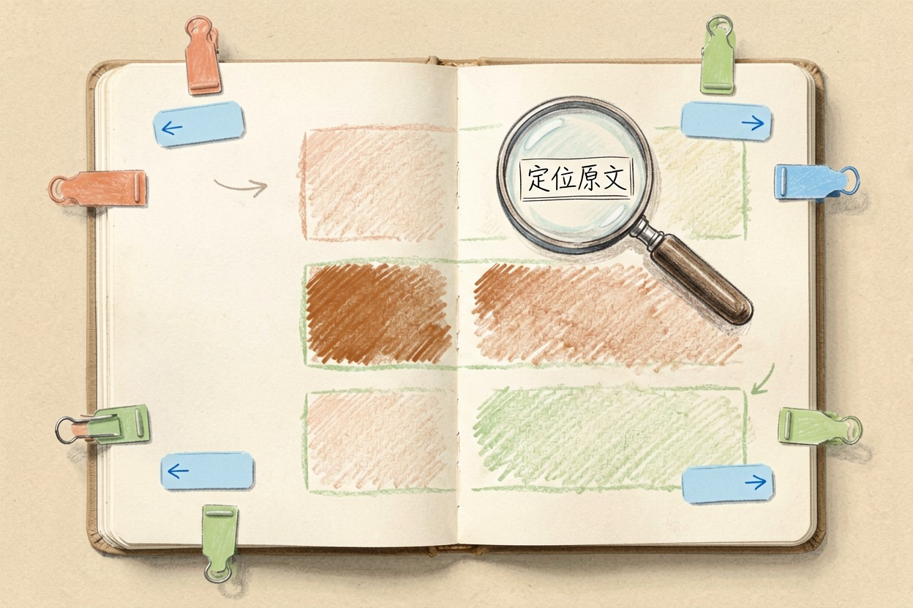

豆包和 Kimi 哪个好用？中文日常场景对比
两个都免费、都在手机上，宣传语还差不多，真正的分水岭是你有没有长资料要读。
一句话结论：豆包和 Kimi 哪个好用，看你手上有没有长文档

豆包和 Kimi 哪个好用，判断标准只有一条。手上经常有几十页的 PDF、合同、论文、会议记录要读，选 Kimi；主要是随口问问题、写点短文案、想用语音聊天和拍照识图，选豆包。两款都免费，都有网页版和手机 App，国内直连，试错成本几乎为零——装错了删掉就是。
一个负责啃长东西，一个负责随身陪聊。
长文档处理：Kimi 一次能读完的量更大
Kimi 一开始就是靠「能一次读完很长的资料」出名的。把一份几十页的 PDF 拖进去，它会通读全文再回答，而不是只看开头几页。追问「第三章的数据和第五章矛盾吗」，它翻回原文的准确率明显更稳。
它还会指出信息出现在原文的哪个位置，方便你回去核对。短板也有。文档过大或者格式太乱时，解析会变慢，偶尔直接失败。单次能吃下多少，以官网当前说明为准。
日常问答与语音：豆包更像随身助手
豆包的强项是「随身」。手机上按住就能语音提问，回答也能念出来，走路、通勤、做饭的时候都不用腾手。它还能认拍下来的照片，比如翻译一张外文菜单，或者看看孩子这道题该怎么解。
写朋友圈配文、短文案、起标题这类活，豆包的语气更活，改起来省事。它背后连着抖音{:target="_blank"}系的内容生态，聊生活话题和网络流行说法时反应更贴地气。
免费程度和使用门槛对比
两款对个人用户的常规使用目前都免费，手机号注册即可，不需要任何额外条件。差别藏在高级能力上：更强的模型、更大的文件、更长的语音时长，两家都可能放进付费档，或者设每日次数上限。这部分调得勤，用之前去官网扫一眼。
对预算为零的学生和上班族，这两个都能当作「不花钱也能长期用下去」的选项，不必纠结。
两个都装会不会重复？分工建议
坦白说，不浪费。它们的高频用途几乎不重叠：Kimi 用在有正经资料要啃的时候，豆包用在随手问、随口说的时候。真正拖累你的是同时装五六个对话 App，每次打开前还得先想该用哪个；想按场景挑一版更全的，看手机 AI 软件推荐。
读长文档时，下面这段通用指令两边都能直接用：
我上传的是一份（文档类型），共约（页数）页。
请按这个顺序输出：
1. 全文核心结论，不超过 3 条；
2. 每一章的要点，各 1 句话；
3. 文中出现的关键数字和日期，整理成表格；
4. 你认为表述含糊或前后不一致的地方。
不要补充文档里没有的信息，不确定的地方直接标注「原文未说明」。最后说一句反的：涉密合同、体检报告、含身份证号的材料，不要上传到任何在线 AI，这两款也一样。还有，只想查一个明确的事实，搜索引擎仍然更快。豆包和 Kimi 哪个好用，实际答案往往是「都装，各司其职」。
本文信息核对于 2026-08-04。AI 产品的价格、免费额度与功能变动频繁，实际以各工具官网当前说明为准。